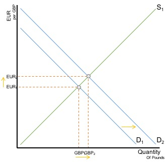

June 2004
Both the pound and euro are classified as currencies with a floating
exchange rate. This means their value is determined by market forces of
demand and supply.
Due to their highly speculative nature, their value can change very
quickly with the slightest news. Uncertainty especially will cause a selling
of the currency. This is because of the uncertainty investors have about the
currency’s future, and therefore decide to sell their reserves of it and move
it to a more certain market. Take for example Brexit, on July 23rd 2016. The
referendum’s outcome came to 51% leave, and hence, Brexit was to go ahead. On
the morning of the 24th, the Pound lost 6% against the Euro within the first
few hours of trading. The loss of certainty caused a large decrease in demand
as well as a large increase in supply. As seen on the Demand and Supply graph
below, there was a shift left demand and right of supply. Hence the new price
equilibrium sets at Eur2 per Gbp.

This said, due to the floating currency’s robust feature, it is
better at withstanding external shocks, and therefore the effects on
the Pound’s value may have not been as great as they would have with
a semi-fixed or fixed exchange rate against the Euro. The robustness
comes from the demand at a certain price, although there has been a
decrease in demand, the increase in supply equals out the drop in
quantity of Pounds, hence people can buy more Pounds with the same
amount of Euros, and the rational consumer will buy more to get better
value for the same amount of money.
The MPC decided unanimously in August 2018 to raise the national
interest rate from 0.5% to 0.75%. Hot money flows in search of the
best return, and this minor increase saw significant change in people’s
savings in UK banks. This rise in demand for better returns on money
has meant investors have moved foreign currency to Pound in order to
store it in UK banks. This increased demand for the Pound has meant a
shift of the demand curve, and a contraction in supply. Hence a new
equilibrium is formed at EUR2 and GBP2. There are not more Pounds
demanded, and hence, more Euros are needed to purchase one Pound.

Between EUR and GBP, the change may not be so great, as the ECB have
an interest rate lower than the UK’s, and looking abroad, many other
countries provide much better returns. As hot money flows, it is likely
people will prefer saving their money in America (Fed) which has 2.5%
interest rates, or even Australia (RBA) which has 1.5%. If the numbers
aren’t strong enough, Australia has been one of the most economically
stable countries in the past decades, therefore the consumer’s certainty
and optimism is higher, and they will be more confident on a reliable
return.
In conclusion, Brexit has sparked a high level of uncertainty, causing
speculators to sell, and hence, a depreciation of the Pound against the
Euro. The government has tried to artificially appreciate the exchange
rate, however with better returns in many other countries outside of
Europe, the efforts have made no significant changes and if the government
wants to have a stronger Pound it must turn towards other measures such
as improving it’s debt and current account deficit.
Thibau Grumett - 03/03/2019
Please do not use comments section, currently not working!
Comment's:
'.$r->a.''.$row->b.'
';
?>
Leave a comment, pl0x:
Both the pound and euro are classified as currencies with a floating exchange rate. This means their value is determined by market forces of demand and supply.
Due to their highly speculative nature, their value can change very quickly with the slightest news. Uncertainty especially will cause a selling of the currency. This is because of the uncertainty investors have about the currency’s future, and therefore decide to sell their reserves of it and move it to a more certain market. Take for example Brexit, on July 23rd 2016. The referendum’s outcome came to 51% leave, and hence, Brexit was to go ahead. On the morning of the 24th, the Pound lost 6% against the Euro within the first few hours of trading. The loss of certainty caused a large decrease in demand as well as a large increase in supply. As seen on the Demand and Supply graph below, there was a shift left demand and right of supply. Hence the new price equilibrium sets at Eur2 per Gbp.
This said, due to the floating currency’s robust feature, it is better at withstanding external shocks, and therefore the effects on the Pound’s value may have not been as great as they would have with a semi-fixed or fixed exchange rate against the Euro. The robustness comes from the demand at a certain price, although there has been a decrease in demand, the increase in supply equals out the drop in quantity of Pounds, hence people can buy more Pounds with the same amount of Euros, and the rational consumer will buy more to get better value for the same amount of money.
The MPC decided unanimously in August 2018 to raise the national interest rate from 0.5% to 0.75%. Hot money flows in search of the best return, and this minor increase saw significant change in people’s savings in UK banks. This rise in demand for better returns on money has meant investors have moved foreign currency to Pound in order to store it in UK banks. This increased demand for the Pound has meant a shift of the demand curve, and a contraction in supply. Hence a new equilibrium is formed at EUR2 and GBP2. There are not more Pounds demanded, and hence, more Euros are needed to purchase one Pound.
Between EUR and GBP, the change may not be so great, as the ECB have an interest rate lower than the UK’s, and looking abroad, many other countries provide much better returns. As hot money flows, it is likely people will prefer saving their money in America (Fed) which has 2.5% interest rates, or even Australia (RBA) which has 1.5%. If the numbers aren’t strong enough, Australia has been one of the most economically stable countries in the past decades, therefore the consumer’s certainty and optimism is higher, and they will be more confident on a reliable return.
In conclusion, Brexit has sparked a high level of uncertainty, causing speculators to sell, and hence, a depreciation of the Pound against the Euro. The government has tried to artificially appreciate the exchange rate, however with better returns in many other countries outside of Europe, the efforts have made no significant changes and if the government wants to have a stronger Pound it must turn towards other measures such as improving it’s debt and current account deficit.
Thibau Grumett - 03/03/2019
Please do not use comments section, currently not working!
Comment's:
'.$r->a.''.$row->b.'